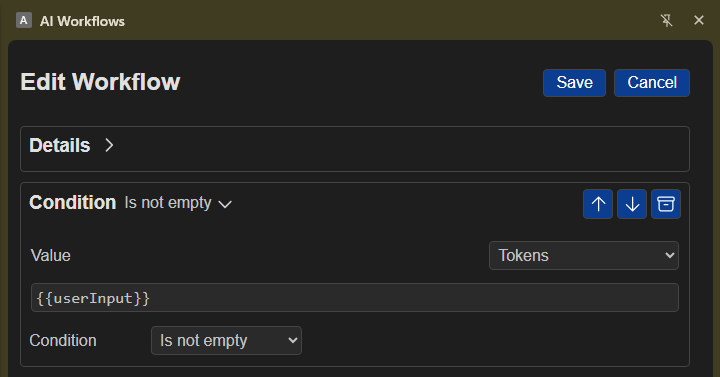

Condition
Use Condition to check information in a workflow before it continues. By default, the workflow stops when the check does not pass. Turn off Stop Workflow if it should continue instead.
Overview
Choose a value to check and select what should be true about it. For many checks, you can also enter text to compare it with.
Simple examples
- Continue only when a page title contains “Release notes.”
- Check that a status matches “Published” before continuing.
- Make sure a required detail is present before sending a message.
Set up a condition
- Value: Choose the information to check. It can come from an earlier step in the workflow.
- Condition: Choose Is empty, Is not empty, Contains, Does not contain, Equals, Does not equal, Starts with, or Ends with.
- Comparison value: For most conditions, enter the text to check for. You do not need this for Is empty or Is not empty.
- Stop Workflow: Checked by default. When checked, a failed condition stops the workflow. When unchecked, the workflow continues after a failed condition.
A value is always required. If you choose a condition that compares text, the comparison value is required too.
